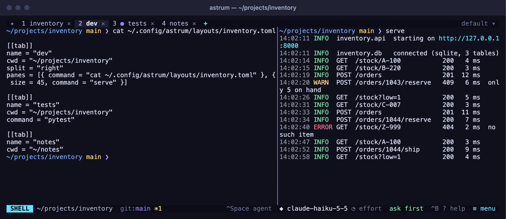
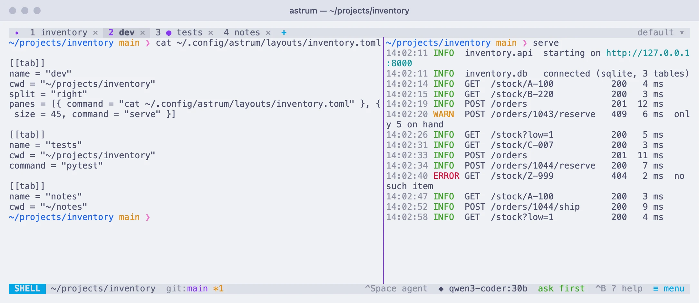

Layouts
Open a project the same way every time. A layout is a file of tabs, splits, folders and commands; open one from the menu or the command line, or save a tab as one.
What a layout is
A layout is a file of your own that says which tabs to open, how each is split into panes, which folder each pane starts in, and what to run there. Layouts live in ~/.config/astrum/layouts/, one file each, named for the layout:
# ~/.config/astrum/layouts/shop.toml
[[tab]]
name = "web"
cwd = "~/src/shop"
split = "right"
panes = [{ command = "nvim ." }, { size = 35, command = "npm run dev" }]
[[tab]]
name = "logs"
cwd = "~/src/shop"
command = "tail -f log/development.log"That is two tabs. The first is split side by side: an editor on the left, and the dev server in a pane that takes 35% on the right. The second is one pane following a log.


Opening one
| Do this | With the mouse | With the keyboard |
|---|---|---|
| Open a layout in this session | ≡ menu → Open a layout… | Ctrl+B l |
| Start a session with one | astrum -s shop --layout shop | |
| List the layouts there are | astrum layouts |
A layout opens as new tabs, added after the ones the session has, and the first of them comes to the front. With --layout on a session that is not running yet, the layout's tabs are the session's only tabs.
Every pane is an ordinary shell. A pane's command is typed at that shell's first prompt, exactly as you would type it, so your aliases, your PATH and whatever your shell's startup files set up all apply. When the command ends, the shell is still there. With the shell integration (zsh, bash and fish have it) the command is typed as soon as the prompt appears; without it, after a moment. If you type in the pane first, its command is not typed after yours.
A pane whose folder is not there still opens, in your home folder, but its command is not run: Astrum says which folder is missing. Folders not given in full are taken from the folder astrum --layout was run in, or from the pane you were in.
Saving a tab as one
Right-click a tab → Save this tab as a layout…, and give the layout a name. What is saved is the tab's name, how it is split, the folder each pane is in, and the command running in each pane now, if one is. Saving to a layout that exists adds the tab to it, or replaces the tab of the same name in it; so a layout of several tabs is saved a tab at a time.
The file is plain text: open it and change it as you like.
The file
| Key | In | What it does |
|---|---|---|
[[tab]] | the file | Starts a tab. A layout has at least one, and at most 20 (and 40 panes in all). |
name | a tab | The tab's name. Left out, the tab is named as any tab is, for its folder or program. |
cwd | a tab, a pane | The folder its shell starts in. A pane's, when not given in full, is inside its tab's. ~ is your home folder. |
command | a tab, a pane | What is typed at the shell's first prompt. |
split | a tab, a pane | "right" puts its panes side by side; "down", one above the other. |
panes | a tab, a pane | The parts it is split into, in order. A pane with panes of its own is split again. |
size | a pane | Its share of the split it is in, in percent. Panes that give none share what is left. |
A file with a key that is not one of these is not opened, and Astrum says which.
What a layout is not
- It is not a saved session. A session that stops comes back by itself, as it was; a layout is for starting from nothing, the same way each time.
- It is yours alone: only the layouts in your own folder are opened. A layout that comes with a project, in the project's own files, is not read.